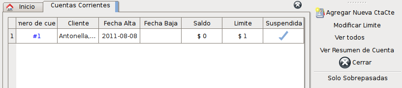
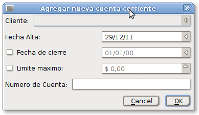
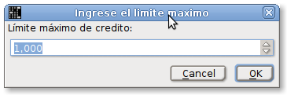
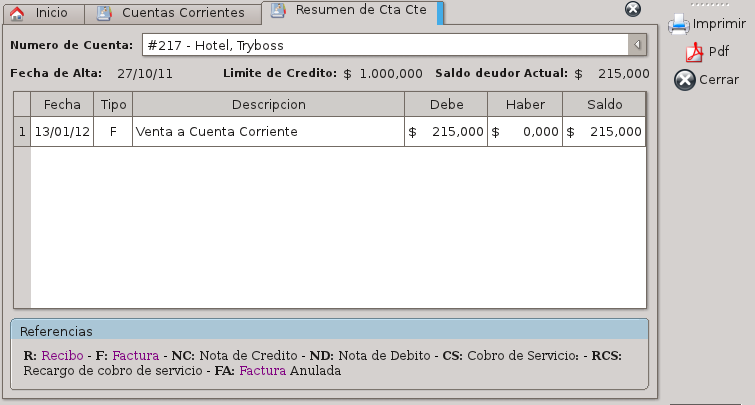

Cuentas Corrientes
Cuentas Corrientes
El sistema posee un módulo que permite administrar las cuentas corriente para los clientes que la posean. Este módulo es necesario si desea utilizar el sistema de servicios.
Para ingresar a la lista de cuentas corrientes se puede hacer mediante el menú Herramientas -> Cuentas corrientes o a través del icono dispuesto en la pantalla inicial.
Allí se mostrará un listado como el siguiente:

El listado de cuentas corrientes posee los siguientes datos:
- Número de cuenta: Identificador único para cada cuenta corriente.
- Cliente: Propietario de la cuenta corriente.
- Fecha de alta: Fecha en que fue creada la cuenta corriente.
- Fecha de baja: Fecha en que fue dada de baja la cuenta corriente.
- Saldo: Saldo actual de la cuenta corriente.
- Límite: Límite máximo de deuda que el cliente puede acumular antes que se limite la contración de nuevas deudas por parte del cliente.
- Suspendida: Muestra el estado de suspensión de la cuenta corriente.
Dentro de las acciones disponibles tenemos las siguientes:
Agregar nueva cuenta corriente.
Permite agregar una nueva cuenta corriente para algún cliente que no posea alguna. Se mostrará un dialogo como el siguiente:
En este dialogo se puede seleccionar el cliente que será el propietario de la cuenta corriente desde la lista desplegable.
La fecha de alta será seleccionada y como datos opcionales, la fecha de cierre indicando el momento en que la cuenta corriente dejará de funcionar y el límite máximo de deuda que el cliente podrá acumular de deuda. Estos ultimos parámetros son opcionales y se pueden habilitar haciendo click sobre el cuadrado que está antes de el título.
El numero de cuenta podrá ser completado con un número a elección o si es dejado sin completar o en blanco, se utilizará el siguiente numero de cuenta disponible.
Para dar de alta la cuenta, utilizamos la opción “Aceptar”. Si existió algún error, se notificará o se dará el aviso de una alta correcta.
A partir de ese momento la cuenta corriente está disponible para ser utilizada.
Modificar límite
Para cambiar el límite de deuda que puede contraer un cliente, seleccionamos la cuenta corriente a la cual deseamos cambiarle el límite y utilizamos esta acción. Nos mostrará el siguiente dialogo:
En este diálogo se podrá ingresar un límite distinto al anterior para la nueva cuenta corriente. Al aceptar el dialogo, se guardará el nuevo límite y de existir algún error, será informado.
Ver Resumen de cuenta
Esta acción le permitirá acceder al historial de cuenta corriente, donde encontrará toda las operaciones que se hayan realizado sobre esta cuenta corriente. Al acceder encontrará una ventana como la siguiente:

Dentro de esta ventana podrá seleccionar la cuenta corriente de la cual desea ver las operaciónes seleccionandola desde la lista desplegable que se encuentra en la parte superior.
Inmediatamente abajo se mostrarán los datos de la cuenta corriente que se encuentra seleccionada, tales como la fecha en que se dió de alta la cuenta corriente, cual es su límite de crédito actual y cual es el saldo adeudado por el cliente.
En la lista que aparece abajo podrá revisar las operaciones de la cuenta corriente. Podrá ordenar la lista a su preferencia presionando sobre los títulos.
Como referencia de la segunda columna se encuentran detalladas las operaciones y sus correspondientes notaciones en el cuadro de “Referencias”.
Imprimir
Esta acción le permitirá imprimir el resumen de la cuenta corriente que esta viendo en este momento.
Esta acción le permitirá generar un archivo del tipo PDF con el mismo contenido que se imprimiría. De esta forma puede enviar el resumen por correo electrónico.